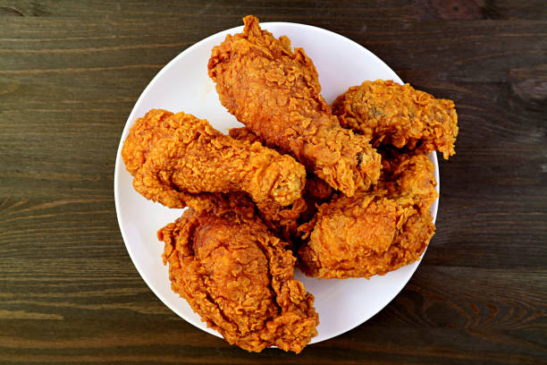

Fried Chicken

This wonderful old-fashioned fried chicken recipe has been in my family for years and years.
Ingredients
- ⅔ cup all-purpose flour
- 2 teaspoons garlic powder
- salt and pepper to taste
- 1 (4 pound) chicken, cut into pieces
- 1 quart vegetable oil for frying, or as needed
- 1 cup sherry
Steps
- Combine flour, garlic powder, salt, and pepper in a brown paper bag.
Add chicken pieces, one at a time, to flour mixture; shake the bag to coat evenly.
Place coated chicken on a tray.
- Heat 1 inch oil in a large skillet over medium-high heat.
Cook chicken in hot oil until golden brown and no longer pink in the center.
An instant-read thermometer inserted into the center should read at least 165 degrees F
(74 degrees C). Transfer chicken to a paper towel-lined plate.
Drain oil from the skillet.
- Return chicken to the skillet and drizzle with sherry. Cover and simmer for 20 minutes.
back